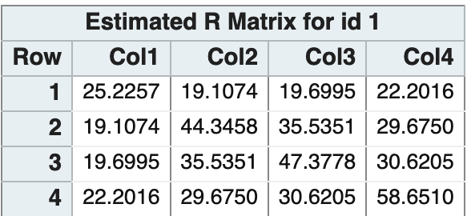
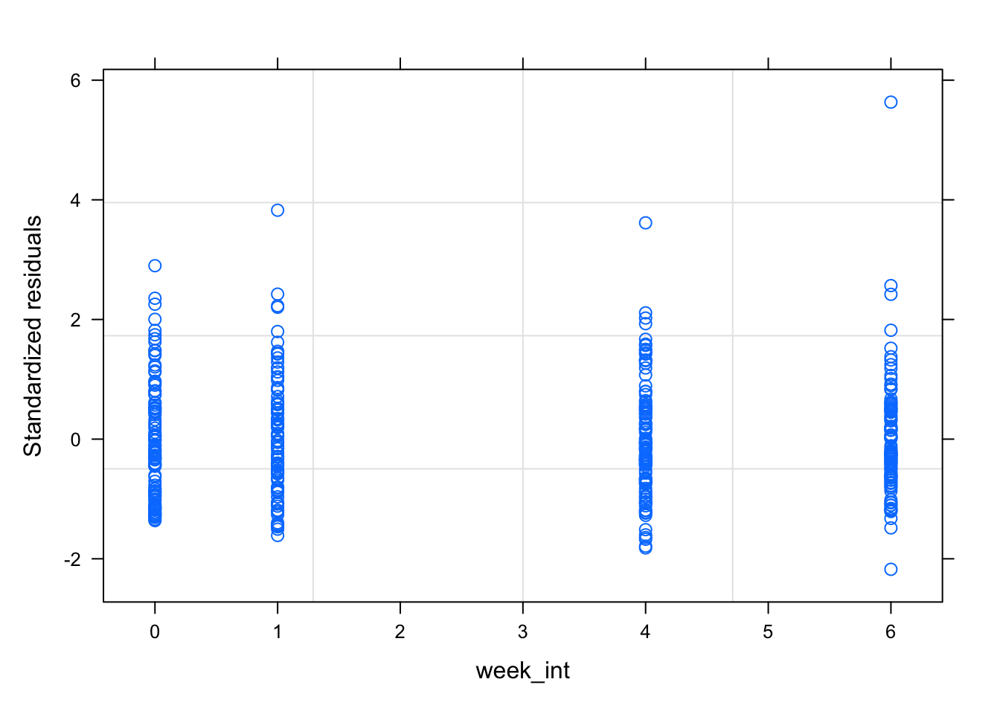

library(plm)library(car)library(skimr)library(sloop) # For object sloothinglibrary(lme4) # mixedlibrary(nlme)library(emmeans)library(faraway)library(tidyverse)library(broom)library(here)library(kableExtra)library(foreign)library(lmeInfo) # for information matrices of lme modelslibrary(broom.mixed)library(ProfileLikelihood)library(sandwich)library(lmtest)
15 Why Longitudinal Data Analysis
More information about the change, at the trade-off of needing to take repeated measurments.
15.1 Specifics of LDA
Replication is a series of observations (each subject) and not individual measurements. Thus the EU is the subject.
15.2 Approaches in LDA
Marginal (averages over population. state employee perspective)
Special case of the so called profile analysis. The main idea for MANOVA is to make some trasnformations and make some derived response varaibles to analyze. The multiple comes from having multiple responses. One is to make the sum of all the responses, to examine average over time. You could also create a variable for linear change across time, or quadratic change within subject.
There are some disadvantages though,
If design is unbalanced across time, MANOVA can’t be used.
Also if there are any missing data, the entire case must be thrown out.
15.3.4 Summary values
Reduce the sequence of each individual to a small set of summary values. Then, you can use the classic t-test or ANOVA, univariate tests.
Area under curve (AUC) - Can only be used when the people have the same time measurements.
Drawbacks
forces data analyst to think about one aspect of the repeated measures.
Might have the same summary measure but different response profile.
Method can’t be applied if one of the covariates is time varying. b/c variance will not be constant from summary to summary.
15.4 Inference on parameters
Likelihood test requires an additional fit on the null hypothesis, but better properties. Recommend Likelihood ratio based tests and CI. Note the RMLE is a correction for the data estimating both the mean and covariance.
16 The setup
The short hand notation for the observations of a single individual are:
\begin{aligned}
Y_{i} = X_{i}\beta + \varepsilon_{i}
\end{aligned}
with \varepsilon_i \sim N(0, \Sigma), which expanded would look like,
\begin{aligned}
\begin{bmatrix}
Y_1 \\
Y_2 \\
\vdots \\
Y_N \\
\end{bmatrix} =
\begin{bmatrix}
X_1 \\
X_2 \\
\vdots \\
X_N \\
\end{bmatrix}
\begin{bmatrix}
\beta_1 \\
\beta_2 \\
\vdots \\
\beta_p
\end{bmatrix} +
\begin{bmatrix}
\mathbf{\varepsilon_{1}} \\
\mathbf{\varepsilon_{2}} \\
\vdots \\
\mathbf{\varepsilon_{N}}
\end{bmatrix}
\end{aligned}
Thus, \varepsilon has a block diagonal structure with each subject having the same covariance matrix.
17 Modeling the Mean
This section follows 5.5 in Fitzmaurice, Laird, and Ware (2011).
The main questions to ask in this model are
Group x time interaction effect - do the group means change over time. Biggest question of longitudinal studies normally
Group effect - a main effect, but similar in normal analyses because if the interaction is significant, then, it’s relatively meaningless to talk about these effects. (Note, if randomized trial, this should coincide with the interaction, because in randomized trial it was assumed that the two groups were the same.)
Time effect - are they same across time?
There are primarily two ways of studying the longitudinal responses
response profiles (perfect fit, treating time as a factor)
(semi-) parametric form
summary measure (like area under the curve)
17.1 Example TLC
This is an exploratory plot summarizing the eventual statements we’d like to say about the model.
tlc %>%ggplot(aes(x = week, y = lead, group = id)) +geom_line(alpha = .2) +facet_wrap(~trt)
Code
# Mean Response Profile by Trttlc_mrp <- tlc %>%group_by(trt, week) %>%summarise(mlead =mean(lead), .groups ="drop_last")tlc_mrp %>%ggplot(aes(x = week, y=mlead, group=trt)) +geom_line(aes(linetype=trt)) +geom_point() +ggtitle("Lead over time") +theme_classic()
17.1.1 SAS
Code
* TLC data analysis example, from chapter 5;
* https://content.sph.harvard.edu/fitzmaur/ala2e/;
DATA tlc_long;
INFILE "~/lda/tlc-data.txt" DLM=" ";
input id group $ lead0 lead1 lead4 lead6;
* create 4 observations from each row;
y=lead0; time=0; output;
y=lead1; time=1; output;
y=lead4; time=4; output;
y=lead6; time=6; output;
drop lead0 lead1 lead4 lead6; * drop original "wide" data columns;
run;
/* set reference level */
/* http://support.sas.com/kb/37/108.html */
proc mixed noclprint=10 data=tlc_long
class id group(ref="P") time(ref="0");
model y = group time group*time / s chisq;
repeated time / type=un subject=id r;
lsmeans group / cl diff;
run;

17.1.2 R: gls
We fit an unstructured covariance, with fully crossed time and treatment factors. In order to get the unstructured covariance matrix, we must use gls, for generalized least squares. This is basically
Code
tlc$trt <-factor(tlc$trt, levels =c("P", "A")) # use P as the reference level# Generalized Least Squares, defaults to REMLtlc_gls <-gls(lead ~ trt*week,corr=corSymm(form =~ time | id),weights =varIdent(form =~1| week),data=tlc)# Table 5.5 in Fitzmauricesummary(tlc_gls)
Getting the type III fixed effect tests, similar to SAS, is a little more work. There must be an easier way, but this shows how to do it manually. Here P0 denotes the mean of placebo at time 0.
Conditional Mean (\mu)
Coef
P0
\beta_1
P1
\beta_1 + \beta_3
P4
\beta_1 + \beta_4
P6
\beta_1 + \beta_5
S0
\beta_1 + \beta_2
S1
\beta_1 + \beta_2 + \beta_3 + \beta_6
S4
\beta_1 + \beta_2 + \beta_4 + \beta_7
S7
\beta_1 + \beta_2 + \beta_5 + \beta_8
Furthermore, the Wald test statistic is
\begin{aligned}
W^2 = (L\hat\beta)'\{L\mathrm{Cov}(\hat\beta)L'\}^{-1}L\hat\beta
\end{aligned}
Compare the following table to the SAS Type 3 tests for Fixed Effects
I’m not entirely sure what’s going on in the anova function in nlme. There is a value for intercept and treatment, and I’m not sure how to interpret that.
It seems the week and interaction are being calculated correctly, not sure why the treatment is different from the manual calculations above. In the presence of an interaction effect however, it doesn’t really matter.
Also notice that Chisq statistic is just the F statistic * ndf. Assuming chisq gives more liberal estimates, effectively infinite residual degrees of freedom.
The following are two anova tables of the same model,
Code
# these results matchanova(tlc_gls, type ="marginal") # nlme
# not sure what's going on hereanova(tlc_gls, type ="sequential")
17.1.4 R: lm
For comparison, we can see that gls gives the same estimates as the gls model, for profile curves, it basically goes through the mean of each group. lm is NOT the right way to do this analysis, but we want to see what it shows for comparison.
Code
tlc_lm <-lm(lead ~ trt*week, data = tlc)cbind("gls"=coef(tlc_gls), "lm"=coef(tlc_lm))
not quite sure this is the fairest comparison, but the heterogeneity in the estimated variance seems to have stabilized the standardized residuals. Need to double check if this is the right stabilization.
Code
plot(tlc_gls, resid(., type ="pearson") ~ week_int) # show against time (instead of default fitted)

Code
plot(tlc$week_int, rstudent(tlc_lm))
17.1.5 R: AUC
A third strategy is to do summary statistics of the curves. The section in the book refers to creating 1 df tests, which are more powerful than the overall F test of trt x time interaction. Often times, if you measure many many time points, the overall f test becomes diluted and it becomes more difficult to detect differences in the two curves, so these are designed to have more power than those tests. should only be specified prior to analysis though, to keep with proper significance control
We consider two tests,
average difference minus baseline.
the contrast will take the form (where n is the number of occassions)
data(ratdrink)ratdrink %>%ggplot(aes(weeks, wt, group = subject)) +geom_line() +facet_wrap(~treat)
17.2.1 different intercepts
Code
# full lmrat_lm <-lm(wt ~ weeks*treat + subject, data = ratdrink) # fixed "block"rat_mmer <-lmer(wt ~ weeks*treat + (1|subject), data = ratdrink) # random "block"# plotting the predictionsrat_preds <- ratdrink %>%add_column(lm_yhat =predict(rat_lm),mmer_yhat =predict(rat_mmer))rat_preds %>%pivot_longer(c(wt, lm_yhat, mmer_yhat), names_to ="response", values_to ="y") %>%ggplot() +geom_line(aes(weeks, y, groups = subject)) +facet_grid(response~treat)
17.2.2 different slopes
The bottom row is the raw data while, the second row is the predictions from a random subject, and finally the top row is the predictions from the fully fixed model.
Code
rat_lm_diffslope <-lm(wt~weeks*treat + subject + subject:weeks, data = ratdrink)# rat_mmer_interaction <- lmer(wt ~ weeks*treat + (1|weeks:subject), data = ratdrink) # weeks is continuous! doesn't work.... too many random effect interceptsrat_mmer_interaction <-lmer(wt ~ weeks*treat + (1|subject) + subject:weeks, data = ratdrink) # weird model....b/c subject:weeks is fixed not sure when rat_mmer_random_slope <-lmer(wt ~ weeks*treat + (weeks|subject), data = ratdrink)rat_mmer_random_slope_nocor <-lmer(wt ~ weeks*treat + (1| subject) + (0+ weeks || subject), data = ratdrink) # without correlation between intercept and sloperat_preds_slope <- ratdrink %>%add_column(lm_diffslope_yhat =predict(rat_lm_diffslope),mmer_interaction_yhat =predict(rat_mmer_interaction),mmer_random_slope_yhat =predict(rat_mmer_random_slope),mmer_random_slope_nocor_yhat =predict(rat_mmer_random_slope_nocor))rat_preds_slope %>%pivot_longer(c(wt, lm_diffslope_yhat, mmer_interaction_yhat, mmer_random_slope_yhat, mmer_random_slope_nocor_yhat), names_to ="response", values_to ="y") %>%ggplot() +geom_line(aes(weeks, y, group = subject)) +facet_grid(response~treat)
We use the MIT growth study menarche example for this section, from Fitzmaurice website
Covariates/Response:
id : girl id
age : age at observation
agemen : age of menarche for girl
time : age - agemen, time relative to menarche.
pbf : percentage body fat
Code
fat <-read.dta("data/fat.dta")# select 20 random girls and show response curvefat %>%group_nest(id) %>%slice_sample(n=20) %>%unnest(data) %>%ggplot(aes(time, pbf)) +geom_point() +geom_line() +facet_wrap(~id) +geom_vline(xintercept =0, color ="red")
17.3.1 Modeling
Fitzmaurice, Laird, and Ware (2011) in chapter 8.8 analyzes this as a piecewise random effects model.
Code
# to fit piecewise function, need variable with after menarche timefat_post <- fat %>%mutate(timepost = time * (time >0)) # create variable for post menarche timefat_lme <-lme(pbf ~ time + timepost,random =~time + timepost | id,data = fat_post)
We should note that there are econometric approaches, such as sandwich estimators, and mixed model approaches that are all competing in the space of modeling the variance. Broadly there are three approaches for variance modeling:
“plm” - several sandwich covariances for panel and fixed effect linear models.
“geepack” - for glm type models, and subsequent geeglm objects
“clubSandwich” - orginary or weighted least sqaures regression
“clusterSEs” - ordinary or weighted least squares regression
“lfe” - standard models
19.1 Examples
19.1.1 Example: Spruce Trees
y: response (log of product of tree size and diameter squared)
tx: treatment ( 2 levels )
0: control condition (25 trees per time point)
1: ozone exposure at 70 ppb (54 trees per time point)
day: time (days since 1988 Jan 1)
chamber: block (ozone controlled chamber)
Code
# str(spruce88)# xtabs(~day + tx, data=spruce88)# xtabs(~tx,data = spruce88)# Example of selecting out some groups of elements for longitudinal analysis. Used above for highlightingspruce88 %>%filter(id %in%sample(levels(spruce88[,"id"])))
[1] y day tx chamber id
<0 rows> (or 0-length row.names)
Code
sid <-spruce88 %>%group_by(chamber) %>%sample_n(5)spruce_highlight <- spruce88 %>%filter(id %in% sid[["id"]])# Emphasizing lines in the plot with background lighterg_base <-ggplot(data = spruce88, mapping =aes(x=day, y=y, color =factor(tx), group=factor(id))) +facet_wrap(~chamber)(g_base +geom_point(alpha=.2)+geom_line(alpha=.2) +geom_line(data=spruce_highlight, aes(x=day, y=y, group=factor(id))))
Code
# (g_base + geom_point(alpha=.2) + geom_smooth(span=.5, aes(group="abc")))# Note: using a constant for the group, will override the previous grouping.# Also, the smoothing will come up with "singularities" since there are only 5 distinct x data points, and lowess will have trouble.
19.1.2 Exploring correlation from week to week, and getting correlation structure.
Suggestion if the data is taken at many different points, just round it to the nearest year and we can still get some sense of the correlation over time. In the case everything is discrete, we can just use the data categories as is.
We should remove the effect of the means from each week. The suggestion in the book is to remove the covariate effect by fitting a regression on the data.
Code
# remove the effect of means from each week# residuals(lm(y~day + tx + chamber, data=spruce88))str(spruce88)
'data.frame': 395 obs. of 5 variables:
$ y : num 4.51 4.98 5.41 5.9 6.14 ...
$ day : num -49 -27 0 26 57 -49 -27 0 26 57 ...
$ tx : num 1 1 1 1 1 1 1 1 1 1 ...
$ chamber: num 1 1 1 1 1 1 1 1 1 1 ...
$ id : int 1 1 1 1 1 2 2 2 2 2 ...
assuming that \varepsilon_i \sim N(0,\Sigma). We show the estimate \hat \Sigma as unstructured covariance matrix:
This is table 5.3 in Fitzmaurice, Laird, and Ware (2011).
Code
# direct group means covariancetlc_gls_un_cov <-gls(lead ~ trt*week,correlation=corSymm(form =~ time | id), weights =varIdent(form =~1| week), data=tlc)getVarCov(tlc_gls_un_cov)
We can also look at the correlation with a scatter plot.
Code
tlc["week"] <-as.factor(tlc$week)# Split into the exposed and placebo groups and make plots from the placebo grouptlc_exposed <- tlc %>%filter(trt =="A") %>%spread(week, lead)tlc_placebo <- tlc %>%filter(trt =="P") %>%spread(week, lead)pairs(tlc_placebo[3:6])
Code
cor(tlc_placebo[3:6])
week_int time w0 w1
week_int 1.0000000 0.9844952 NA NA
time 0.9844952 1.0000000 NA NA
w0 NA NA 1 NA
w1 NA NA NA 1
19.1.4 Example: Body Fat and Menarche
The variance covariance matrix can be extracted in two ways:
Code
# using reStruct from model is scale version of covariance matrixlist(as.matrix(fat_lme$modelStruct$reStruct[[1]]) * fat_lme$sigma^2,getVarCov(fat_lme))
[[1]]
(Intercept) time timepost
(Intercept) 45.939153 2.526047 -6.109078
time 2.526047 1.630971 -1.750363
timepost -6.109078 -1.750363 2.749384
[[2]]
Random effects variance covariance matrix
(Intercept) time timepost
(Intercept) 45.9390 2.5260 -6.1091
time 2.5260 1.6310 -1.7504
timepost -6.1091 -1.7504 2.7494
Standard Deviations: 6.7778 1.2771 1.6581
We can also model the within correlation differently with correlation
corCAR1 - models the correlation by phi = .2 (default), has autocorrelation function h(\cdot), with parameters s distance, and \phi correlation
# Modelings including random effectsdental_lme <-lme(distance ~ age*gender, random =~1| id,data = dental)dental_lmer <-lmer(distance~age*gender + (1| id), data = dental)# same model in lmer and lme, G unstructureddental_lmer_age <-lmer(distance ~ age*gender + (age | id), data = dental)dental_lme_age <-lme(distance ~ age*gender, random =~ age | id,data = dental)# uncorrelated age and id in random effect, G diagdental_lme_age_diag <-lme(distance ~ age*gender,data = dental,random =list(id =pdDiag(form =~age))) # heterogenous, but uncorrelated age and id (age || id) in lmerdental_lmer_age_diag <-lmer(distance~age*gender + (age || id), data = dental)
Code
getVarCov(dental_lme)getVarCov(dental_lme_age)getVarCov(dental_lme_age_diag)getVarCov(dental_lme, type ="marginal") # same as CS variancegetVarCov(dental_lme_age, type ="marginal")getVarCov(dental_lme_age_diag, type ="marginal")
Random effects variance covariance matrix
(Intercept)
(Intercept) 3.2986
Standard Deviations: 1.8162
Random effects variance covariance matrix
(Intercept) age
(Intercept) 5.78640 -0.289630
age -0.28963 0.032524
Standard Deviations: 2.4055 0.18035
Random effects variance covariance matrix
(Intercept) age
(Intercept) 2.4168 0.0000000
age 0.0000 0.0077469
Standard Deviations: 1.5546 0.088017
id 1
Marginal variance covariance matrix
1 2 3 4
1 5.2207 3.2986 3.2986 3.2986
2 3.2986 5.2207 3.2986 3.2986
3 3.2986 3.2986 5.2207 3.2986
4 3.2986 3.2986 3.2986 5.2207
Standard Deviations: 2.2849 2.2849 2.2849 2.2849
id 1
Marginal variance covariance matrix
1 2 3 4
1 4.9502 3.1751 3.1162 3.0574
2 3.1751 4.9625 3.3176 3.3888
3 3.1162 3.3176 5.2351 3.7202
4 3.0574 3.3888 3.7202 5.7679
Standard Deviations: 2.2249 2.2277 2.288 2.4016
id 1
Marginal variance covariance matrix
1 2 3 4
1 4.7772 3.0366 3.1605 3.2845
2 3.0366 5.0561 3.3464 3.5014
3 3.1605 3.3464 5.3970 3.7183
4 3.2845 3.5014 3.7183 5.7998
Standard Deviations: 2.1857 2.2486 2.3231 2.4083
The covariance stuff is harder to calculate from lmer, I only know how to get from manual components, there may be something better that I don’t know about.
Code
# GVarCorr(dental_lmer_age)[[1]]
(Intercept) age
(Intercept) 5.7744874 -0.2886962
age -0.2886962 0.0324516
attr(,"stddev")
(Intercept) age
2.4030163 0.1801433
attr(,"correlation")
(Intercept) age
(Intercept) 1.0000000 -0.6669087
age -0.6669087 1.0000000
Code
# Manual calculation of G = Sigma^2 L'LL <-getME(dental_lmer_age, "Lambda") # Marginal covariancesig <-getME(dental_lmer_age, "sigma")(crossprod(L) * sig^2)[1:2, 1:2]
2 x 2 sparse Matrix of class "dsCMatrix"
[1,] 5.7889208 -0.01612650
[2,] -0.0161265 0.01801819
Code
# ZGZ' + RZ <-getME(dental_lmer_age, "Z")G <-Matrix(diag(27)) %x%VarCorr(dental_lmer_age)[[1]] # hadamardR <-Matrix(diag(rep(sigma(dental_lmer_age)^2, 108))) # varY <- Z %*% G %*%t(Z) + R # Var(Y)varY[1:4, 1:4]
I was also curious how this compares to just calculating the sample covariance. It seems not all that different from the unstructured covariance matrix. They are different, but it seems the residuals being calculated are different. I thought ML estimator should be pretty close to the unstructured estimate.
Code
# sample covariance with group centeringdental %>%group_by(gender, age) %>%mutate(cdist = distance -mean(distance, na.rm =TRUE)) %>%# group centerpivot_wider(id_cols =c(age), names_from = id, values_from = cdist) %>%# matrix format for cov ungroup() %>%select(-age) %>%data.matrix() %>%t() %>%cov()
# predictions from each of the modelsdental_yhat <- dental %>%add_column(un =predict(dental_un),hun =predict(dental_hun),cs =predict(dental_cs),csh =predict(dental_csh),ar =predict(dental_ar),arh =predict(dental_arh),het =predict(dental_het),lme =predict(dental_lme),fixed =predict(dental_fixed),lm =predict(dental_lm),lme_age_diag =predict(dental_lme_age_diag),lme_age =predict(dental_lme_age))dental_yhat %>%filter(id ==2) %>%pivot_longer(cols = distance:lme_age, names_to ="type",values_to ="response") %>%ggplot(aes(age, response, color = type)) +geom_point() +geom_line()
Here we examine what all these models actually predicted. For the marginal model, most of them are being predicted together, which makes sense. The “distance” are the raw values displayed for one individual. We can see that the fixed model (separate fixed effect for id) and total mean model (lm, also called pooled) runs with the other coefficients. As far as estimates go, there are 3 separate groups, and probably some are due to rounding error. I think theoretically, the gls beta estimates should all be the same?
Now we should also be concered about the effects of vcov of the different models
The sandwich estimators here are also worth comparing. All estimators have the form X'\hat\Sigma X with different “meat” for \hat \Sigma.
# A tibble: 158 × 4
childid `1` `2` `3`
<fct> <int> <int> <int>
1 2 5 NA NA
2 6 4 NA NA
3 8 3 NA NA
4 10 4 NA NA
5 13 3 NA NA
6 22 3 NA NA
7 31 4 NA NA
8 32 3 NA NA
9 38 5 NA NA
10 41 3 NA NA
# … with 148 more rows
# ℹ Use `print(n = ...)` to see more rows
Code
# 2 missing vsae valuesautism %>%lapply(rlang::as_function(~which(is.na(.x)))) # columnwise which missing
# TODO: with id_slope# average coefficients for each fitted child? seems okay way to summarize this fixed effects model.rg_lm_id_slope <-ref_grid(autism_lm_id_slope, at =list("age"=c(2, 3), "sicdegp")) # nesting
NOTE: A nesting structure was detected in the fitted model:
childid %in% sicdegp
There are 4 ways that we can discuss for baseline adjustment from Fitzmaurice, Laird, and Ware (2011) chapter 5.7
Keep in outcome vector, no assumptions about group differences in mean response at baseline. “baseline group different” (basically what we did prior)
Keep in outcome vecto, make assumption that group means are equal at baseline (like in randomized trial) “no baseline
Subtract baseline response from post-baseline. Analyze the diffrences from baseline
Use baseline value as a covariates in the analysis of the post-baseline responses.
In summary, Fitzmaurice shows and recommends:
1 = 3.
2 is just as efficient as 4
2 is more efficient than 1.
assumption 2 is most accurate in a randomized control trial, in which you expect baseline to be similar. introducing backdoor bias (conditioning on collider) may happen in observational studies. In which case use 1
Depending on the strategy that you choose, the interpretation of the coefficients will differ, so beware, although some cases reduce to linear combinations of the coefficients.
We examine the differences of these 4 approaches on the TLC dataset.
21.1 Method Implementations
21.1.1 1. raw
This method is just the standard response profile analysis, which we’ve shown above.
Code
tlc_baseline_1 <- tlc_gls
21.1.2 2. constrain baseline
In order to force baseline to be modeled the same, we need to remove the main effect for treament, and the interaction term involving the baseline. Unfortunately we can’t remove a single level of the interaction if we specify week*trt, nor does gls accept a manually made model matrix, so we must construct the variables through the formula interface.
Code
# keep in outcome, assume similar intercept # remove main effect, and week0 interactions.# gls doesn't take model.matrix, so manual specification through formula is the way to do it# update also acts kinda weird# table 5.7 in Fitzmaurice# https://content.sph.harvard.edu/fitzmaur/ala2e/tlc_baseline_2 <-gls(lead ~ week +I(week =="w1"& trt =="A") +I(week =="w4"& trt =="A") +I(week =="w6"& trt =="A"),data = tlc,correlation =corSymm(form =~ time | id),weights =varIdent(form =~1| week))# type III fixed effect test for interaction hypothesisanova(tlc_baseline_2, Terms =3:5) # Chisq = F * ndf = 111.94
This analysis is just a reframed version of the first analysis, at least in terms of estimates.
Code
# modeling the difference# time - 1, because gls throws error. corSymm needs consecutive integers starting at 1.tlc_baseline_3 <-gls(lead_diff ~ trt*week,correlation =corSymm(form =~ time-1| id), # unstructuredweights =varIdent(form =~1| week), # heterogenousdata = tlc_diff %>%mutate(trt =factor(trt, levels =c("P", "A"))))anova(tlc_baseline_3, Terms =c(2, 4)) # trt x week interaction test is now test on combined c(trt, trt:week) of diff
To see that they are the same, notice that the baseline change model term estimates are simply linear combinations of the raw model.
Code
tribble(~`change model`, ~`raw model terms`, ~`value` , ~`interpretation`,"(Intercept)", "weekw1", "-1.612", "in placebo, diff between w1 and baseline","trtA", "trtA:weekw1", "-11.406", "difference in trt slopes from baseline to w1","weekw4", "weekw4 - weekw1","-0.59", "in placebo, diff between w4 and w1","trtA:weekw4", "trtA:weekw4 - trtA:weekw1","2.582", "diff in trt slope from w4 to w1") %>%kbl() %>%kable_styling(full_width =FALSE)
change model
raw model terms
value
interpretation
(Intercept)
weekw1
-1.612
in placebo, diff between w1 and baseline
trtA
trtA:weekw1
-11.406
difference in trt slopes from baseline to w1
weekw4
weekw4 - weekw1
-0.59
in placebo, diff between w4 and w1
trtA:weekw4
trtA:weekw4 - trtA:weekw1
2.582
diff in trt slope from w4 to w1
Given that they are the same (or linear combinations), what about the standard errors of the estimates? Let’s check for “weekw4”
Code
cbind(c(-1, 1) %*% tlc_gls$varBeta[3:4, 3:4] %*%c(-1, 1), # old model std err tlc_baseline_3$varBeta["weekw4", "weekw4"]) # baseline change model std err
The marginal covariances are also the same if we change the estimation method to ML.
The idea here was that we could calculate the change from baseline covariance estimate from the raw model estimates of covariance.
\begin{aligned}
\underbrace{\widehat{\mathrm{Cov}}(Y_{i2} -Y_{i1}, Y_{i2} -Y_{i1})}_{\Delta \text{ baseline model estimates}} = \underbrace{\widehat{\mathrm{Var}}(Y_{{i2}}) - 2\widehat{\mathrm{Cov}}(Y_{i2}, Y_{i1}) + \widehat{\mathrm{Var}}(Y_{i1})}_{\text{Raw model estimates}}
\end{aligned}
Code
# We note this is NOT true when we use the REML estimates# linear L <-matrix(c(-1, 1, 0, 0,-1, 0, 1, 0,-1, 0, 0, 1), byrow =TRUE, ncol =4)# not the same!list(`from_baseline_change_model`=getVarCov(tlc_baseline_3),`from_raw_model`= L %*%getVarCov(tlc_baseline_1) %*%t(L))
This method results in standard error estimates that are more efficient, but generally only recommended for randomized studies. In observational studies, there’s danger in introducing bias.
We can do ancova on the raw values, or change from baseline values. That is, we could consider either:
Both of these will give the same estimates (maybe obviously when written out this way), but \gamma' = \gamma + 1.
We see that 2 and 4 have larger F-statistics, implying that there is slightly more power to detect the group differences (assuming the assumptions are reasonable).
Fitzmaurice, Laird, and Ware (2011) concludes that 2 should be recommended, because we get similar efficiency gains, and there is an implicit assumption about the covariance matrix of the ancova model. In the ANCOVA model, we only have a 3x3 covariance matrix, where as in baseline change model, we estimated a 4x4 covariance matrix. Hence, we are implicitly assuming that \mathrm{Cov}(Y_{i1}, Y_{i2}) = \mathrm{Cov}(Y_{i1}, Y_{i3}) = \mathrm{Cov}(Y_{i1}, Y_{i4})
Residuals from a longitudinal model will be correlated. Fitzmaurice, Laird, and Ware (2011) recommends that we “decorrelate” them with a cholesky decomposition of the estimated covariance of the errors. It can get confusing with the estimators and terminology here…
function (object, level = Q, type = c("response", "pearson",
"normalized"), asList = FALSE, ...)
{
type <- match.arg(type)
Q <- object$dims$Q
val <- object[["residuals"]]
if (is.character(level)) {
nlevel <- match(level, names(val))
if (any(aux <- is.na(nlevel))) {
stop(sprintf(ngettext(sum(aux), "nonexistent level %s",
"nonexistent levels %s"), level[aux]), domain = NA)
}
level <- nlevel
}
else {
level <- 1 + level
}
if (type != "response") {
val <- val[, level]/attr(val, "std")
}
else {
val <- val[, level]
}
if (type == "normalized") {
if (!is.null(cSt <- object$modelStruct$corStruct)) {
val <- recalc(cSt, list(Xy = as.matrix(val)))$Xy[,
seq_along(level)]
}
else {
type <- "pearson"
}
}
if (length(level) == 1) {
grps <- as.character(object[["groups"]][, max(c(1, level -
1))])
if (asList) {
val <- as.list(split(val, ordered(grps, levels = unique(grps))))
}
else {
grp.nm <- row.names(object[["groups"]])
val <- naresid(object$na.action, val)
names(val) <- grps[match(names(val), grp.nm)]
}
attr(val, "label") <- switch(type, response = {
if (!is.null(aux <- attr(object, "units")$y)) paste("Residuals",
aux) else "Residuals"
}, pearson = "Standardized residuals", normalized = "Normalized residuals")
val
}
else naresid(object$na.action, val)
}
<bytecode: 0x7f7ee5f19a40>
<environment: namespace:nlme>
22.2 Aggregation
The next method deals with aggregation
23 Econometrics Approaches
The Econometrics methods that deal with longitudinal data is a little different than statistics. We’ll explore the terminology and methods here.
Pooled Model
24 Software Comparisons
plm (unequal observations between groups, needs adjustment from nlme)
lme4, nlme (maximum likelihood approach, not intuitive)
25 PLM Vignette
Provides functions for panel data from “econometricians” point of view.
Provides a few functions
25.1plm
the fixed effects model (“within”),
the pooling model (“pooling”),
the first-difference model (“fd”),
the between model (“between”),
the error components model (“random”).
25.1.1 EmplUK
firm - firm index
year - year
sector - the sector of activity
emp - employment
wage - wages
capital - capital
output - output
Code
data("EmplUK")
Code
# pdata.frame creats a dataframe for plm to work withE <-pdata.frame(EmplUK, # The orig dataframeindex=c("firm","year"), # The "individual" and "time" variable namesdrop.index =TRUE, # Don't show index columnsrow.names =TRUE) # Show rownames that combine individual-timeclass(E) # pdata.frame
[1] "pdata.frame" "data.frame"
Code
summary(E$emp) # Selecting the column from a pdata.frame give a "pseries" object
total sum of squares: 261539.4
id time
0.980765381 0.009108488
Min. 1st Qu. Median Mean 3rd Qu. Max.
0.104 1.181 2.287 7.892 7.020 108.562
Code
methods(class="pseries") # Looking at the methods with a pseries object
[1] as.matrix between Between Complex
[5] D diff F G
[9] index is.pbalanced is.pconsecutive L
[13] lag lead make.pbalanced make.pconsecutive
[17] Math Ops pcdtest pdim
[21] plot print pvar Sum
[25] summary Within
see '?methods' for accessing help and source code
Code
# plm:::print.summary.pseries# plm:::summary.pseries # The function for summarizing the series
pseries datatype comes with various functions to operate on them to compute correctly time lag within each individual
Code
between(E$emp) # means across the time periodsSum(E$emp) # sum across the time periodsWithin(E$emp) # deviation from meanhead(plm:::lag.pseries(E$emp, 0:2)) # Lag the sequence within subject by however many
Grunfeld %>%ggplot(aes(year, inv, color =factor(firm))) +geom_line()
geom_path: Each group consists of only one observation. Do you need to adjust
the group aesthetic?
Code
grun.po <-plm(inv~value + capital, data = Grunfeld, model ="pooling") # pooledgrun.fe <-plm(inv~value + capital, data = Grunfeld, model ="within") # fixed effectsgrun.re <-plm(inv~value + capital, data = Grunfeld, model ="random") # random effectsgrun.fd <-plm(inv~value + capital, data = Grunfeld, model ="fd") # first differencesummary(grun.po)
Pooling Model
Call:
plm(formula = inv ~ value + capital, data = Grunfeld, model = "pooling")
Balanced Panel: n = 10, T = 20, N = 200
Residuals:
Min. 1st Qu. Median 3rd Qu. Max.
-291.6757 -30.0137 5.3033 34.8293 369.4464
Coefficients:
Estimate Std. Error t-value Pr(>|t|)
(Intercept) -42.7143694 9.5116760 -4.4907 1.207e-05 ***
value 0.1155622 0.0058357 19.8026 < 2.2e-16 ***
capital 0.2306785 0.0254758 9.0548 < 2.2e-16 ***
---
Signif. codes: 0 '***' 0.001 '**' 0.01 '*' 0.05 '.' 0.1 ' ' 1
Total Sum of Squares: 9359900
Residual Sum of Squares: 1755900
R-Squared: 0.81241
Adj. R-Squared: 0.8105
F-statistic: 426.576 on 2 and 197 DF, p-value: < 2.22e-16
Code
summary(grun.fe)
Oneway (individual) effect Within Model
Call:
plm(formula = inv ~ value + capital, data = Grunfeld, model = "within")
Balanced Panel: n = 10, T = 20, N = 200
Residuals:
Min. 1st Qu. Median 3rd Qu. Max.
-184.00857 -17.64316 0.56337 19.19222 250.70974
Coefficients:
Estimate Std. Error t-value Pr(>|t|)
value 0.110124 0.011857 9.2879 < 2.2e-16 ***
capital 0.310065 0.017355 17.8666 < 2.2e-16 ***
---
Signif. codes: 0 '***' 0.001 '**' 0.01 '*' 0.05 '.' 0.1 ' ' 1
Total Sum of Squares: 2244400
Residual Sum of Squares: 523480
R-Squared: 0.76676
Adj. R-Squared: 0.75311
F-statistic: 309.014 on 2 and 188 DF, p-value: < 2.22e-16
Code
summary(grun.re)
Oneway (individual) effect Random Effect Model
(Swamy-Arora's transformation)
Call:
plm(formula = inv ~ value + capital, data = Grunfeld, model = "random")
Balanced Panel: n = 10, T = 20, N = 200
Effects:
var std.dev share
idiosyncratic 2784.46 52.77 0.282
individual 7089.80 84.20 0.718
theta: 0.8612
Residuals:
Min. 1st Qu. Median 3rd Qu. Max.
-177.6063 -19.7350 4.6851 19.5105 252.8743
Coefficients:
Estimate Std. Error z-value Pr(>|z|)
(Intercept) -57.834415 28.898935 -2.0013 0.04536 *
value 0.109781 0.010493 10.4627 < 2e-16 ***
capital 0.308113 0.017180 17.9339 < 2e-16 ***
---
Signif. codes: 0 '***' 0.001 '**' 0.01 '*' 0.05 '.' 0.1 ' ' 1
Total Sum of Squares: 2381400
Residual Sum of Squares: 548900
R-Squared: 0.7695
Adj. R-Squared: 0.76716
Chisq: 657.674 on 2 DF, p-value: < 2.22e-16
Code
summary(grun.fd)
Oneway (individual) effect First-Difference Model
Call:
plm(formula = inv ~ value + capital, data = Grunfeld, model = "fd")
Balanced Panel: n = 10, T = 20, N = 200
Observations used in estimation: 190
Residuals:
Min. 1st Qu. Median 3rd Qu. Max.
-200.889558 -13.889063 0.016677 9.504223 195.634938
Coefficients:
Estimate Std. Error t-value Pr(>|t|)
(Intercept) -1.8188902 3.5655931 -0.5101 0.6106
value 0.0897625 0.0083636 10.7325 < 2.2e-16 ***
capital 0.2917667 0.0537516 5.4281 1.752e-07 ***
---
Signif. codes: 0 '***' 0.001 '**' 0.01 '*' 0.05 '.' 0.1 ' ' 1
Total Sum of Squares: 584410
Residual Sum of Squares: 345460
R-Squared: 0.40888
Adj. R-Squared: 0.40256
F-statistic: 64.6736 on 2 and 187 DF, p-value: < 2.22e-16
Code
# Statistical equivalentsummary(lm(inv~value + capital, data = Grunfeld)) # pooled
Call:
lm(formula = inv ~ value + capital, data = Grunfeld)
Residuals:
Min 1Q Median 3Q Max
-291.68 -30.01 5.30 34.83 369.45
Coefficients:
Estimate Std. Error t value Pr(>|t|)
(Intercept) -42.714369 9.511676 -4.491 1.21e-05 ***
value 0.115562 0.005836 19.803 < 2e-16 ***
capital 0.230678 0.025476 9.055 < 2e-16 ***
---
Signif. codes: 0 '***' 0.001 '**' 0.01 '*' 0.05 '.' 0.1 ' ' 1
Residual standard error: 94.41 on 197 degrees of freedom
Multiple R-squared: 0.8124, Adjusted R-squared: 0.8105
F-statistic: 426.6 on 2 and 197 DF, p-value: < 2.2e-16
Code
summary(lm(inv~firm + capital + value, data = Grunfeld)) # fixed effects
Call:
lm(formula = inv ~ firm + capital + value, data = Grunfeld)
Residuals:
Min 1Q Median 3Q Max
-184.009 -17.643 0.563 19.192 250.710
Coefficients:
Estimate Std. Error t value Pr(>|t|)
(Intercept) -70.29672 49.70796 -1.414 0.159
firm2 172.20253 31.16126 5.526 1.08e-07 ***
firm3 -165.27512 31.77556 -5.201 5.14e-07 ***
firm4 42.48742 43.90988 0.968 0.334
firm5 -44.32010 50.49226 -0.878 0.381
firm6 47.13542 46.81068 1.007 0.315
firm7 3.74324 50.56493 0.074 0.941
firm8 12.75106 44.05263 0.289 0.773
firm9 -16.92555 48.45327 -0.349 0.727
firm10 63.72887 50.33023 1.266 0.207
capital 0.31007 0.01735 17.867 < 2e-16 ***
value 0.11012 0.01186 9.288 < 2e-16 ***
---
Signif. codes: 0 '***' 0.001 '**' 0.01 '*' 0.05 '.' 0.1 ' ' 1
Residual standard error: 52.77 on 188 degrees of freedom
Multiple R-squared: 0.9441, Adjusted R-squared: 0.9408
F-statistic: 288.5 on 11 and 188 DF, p-value: < 2.2e-16
Code
summary(lmer(inv~ (1|firm) + capital + value, data = Grunfeld)) # random model, but different random effect estimators
Warning: Some predictor variables are on very different scales: consider
rescaling
Linear mixed model fit by REML ['lmerMod']
Formula: inv ~ (1 | firm) + capital + value
Data: Grunfeld
REML criterion at convergence: 2195.9
Scaled residuals:
Min 1Q Median 3Q Max
-3.4319 -0.3498 0.0210 0.3592 4.8145
Random effects:
Groups Name Variance Std.Dev.
firm (Intercept) 7367 85.83
Residual 2781 52.74
Number of obs: 200, groups: firm, 10
Fixed effects:
Estimate Std. Error t value
(Intercept) -57.86442 29.37776 -1.97
capital 0.30819 0.01717 17.95
value 0.10979 0.01053 10.43
Correlation of Fixed Effects:
(Intr) capitl
capital -0.019
value -0.328 -0.368
fit warnings:
Some predictor variables are on very different scales: consider rescaling
26 GLS
See Wikipedia, the article is fairly comprehensive.
Common forms of the gls command are as follows (from Pinheiro, Pinheiro, and Bates (2000)):
We can play around with the structure of covariance matrices with:
Code
# In order to specify the correlation structure to be unstructured, we allow each group to be different for id. But for each time point to be related.# ?corSymm# corSymm(form=tlc$time | tlc$id)# In order to see all the correlation matrices for just the first individualcorMatrix(Initialize(corSymm(form=~1| id), data=tlc))$`1`